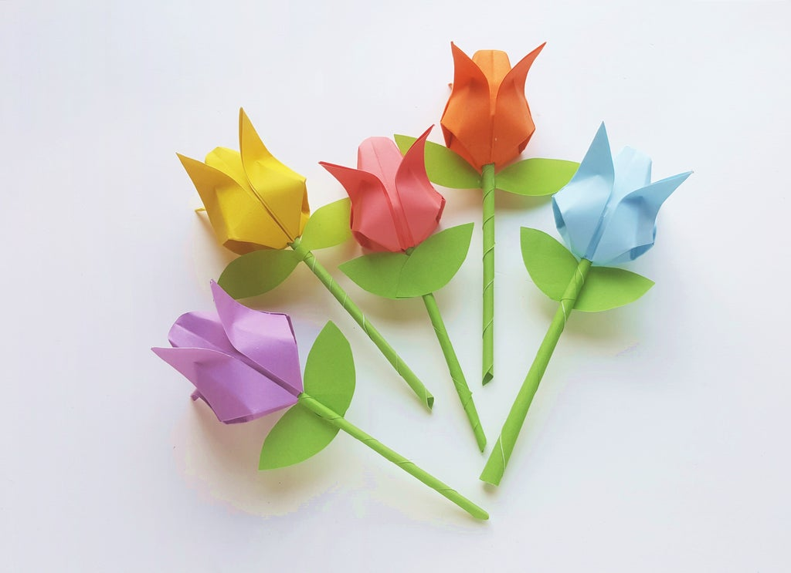
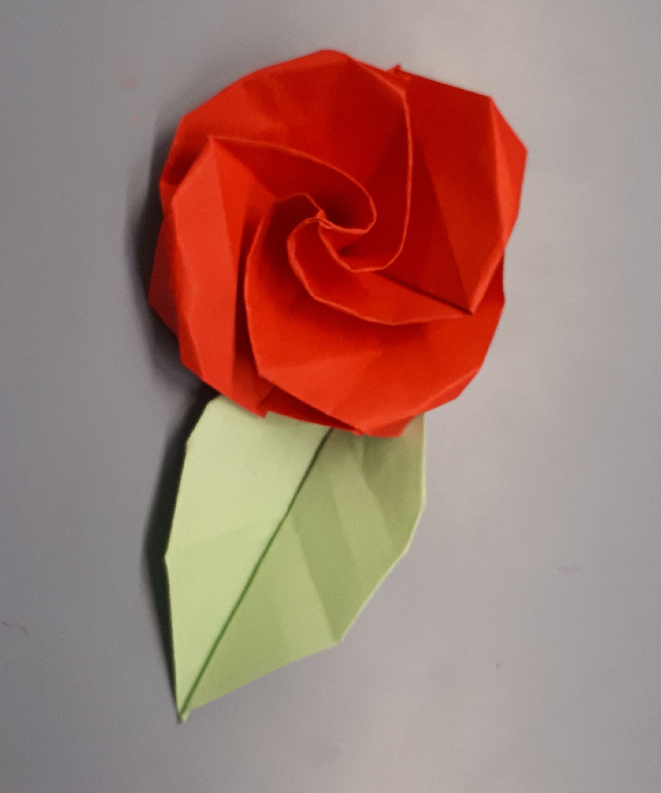

Kusudama
- Kusudama (translated as "medicine ball")
- Kusudama were traditionally used as incense and poutpurri, from real flowers or herbs.
- Decorative kusudama are made by using folded paper origami units glued together.

Tulip
- Tulips are known for their bold colors and beautiful shape, and most varieties are indeed almost perfectly symmetrical.
- The blooms have three petals and three sepals, but since the sepals are almost the same size and shape as the petals.
- Tulips appear to have six petals to a bulb.

Rose
- Rose petals are edible and rose water (made from soaking the petals in water) is often added to jellies or jams,or is used as flavoring in Indian and Chinese dishes
- Roses also grow a berry-shaped fruit called rose hips.
- The fruit can be orange, red, dark purple, or even black.
Lily
- Lilies most commonly mean devotion or purity, though meaning can vary by type of lily, culture, and color.
- Because of the Greek myth of Hera and Zeus, lilies are associated with rebirth and motherhood.
- In China, lilies are used in weddings because they are tied to 100 years of love. They are also tied to good luck.